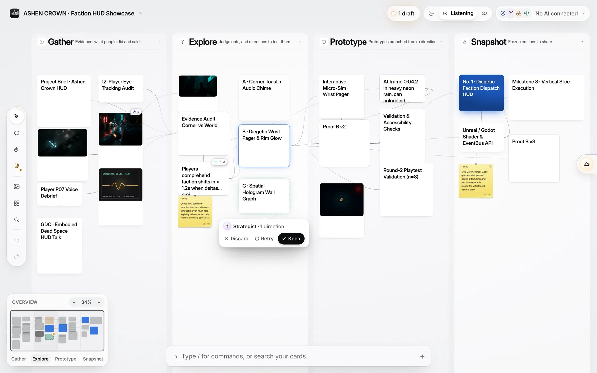

The whiteboard that remembers why.
Vellum is a shared thinking space for you and AI. Put the evidence on the board, let a crew of agents argue about it, and keep every decision with the reason it was made.
Most AI canvases help you make more. Vellum helps you think it through.
The best product meetings skip the slides and go straight to the whiteboard. Then someone wipes the whiteboard.
Vellum keeps what usually gets wiped: the context, the options you turned down and why, and the decision itself. When the facts change, it brings that decision back instead of letting it quietly expire.
One board, four zones, left to right.
Every board reads like an argument you could defend. Evidence on the left, something you can ship on the right, and every card in between linked to where it came from.

Built for thinking clearly, not for making more.
-
Spatial context
Where you put something is part of what it means. Snap two cards together or draw a line, and Vellum records the relation: supports, counters or refines.
-
Collective intelligence
The agents reason from distinct expert views, so they don't just agree with you. The Strategist forks, the Critic objects, and the disagreement stays on the board where you can use it.
-
Decision memory
Every decision keeps what you chose, why, what it rests on and what you passed over. Six months later you can still explain it, even to yourself.
-
Continuous reasoning
When new evidence arrives, Vellum shows which decisions it touches and whether it supports or counters them. Reopen the choice, or write down why it still holds.
-
Human agency
Agents can challenge a direction you confirmed. They can't overrule it. Nothing they draft lands on the board until you keep it.
A crew that thinks with you, and occasionally against you.
Four agents with different jobs share your board. Every card shows who worked on it, so you always know whose idea it was. Including the bad ones.
Scout
Reads your sources and sorts the evidence: observed, reported, or somebody's hunch.
Two of these seven sources are the same review, quoted twice.
Strategist
Forks a judgment into directions you can actually test, and says what each one is betting on.
If B is right, testers should find the lantern in under five seconds.
Wright
Builds the proof: a page, a storyboard, a render brief, an action list. Drafts wait for your OK.
Here's a foam mock-up plan for B. Keep or retry?
Critic
Checks the work against its sources. Politely at first.
Nothing on the board says campers want a dial.
They can challenge your decision. Only you can make it.
From evidence to prototype, whatever you make.
Why it's called Vellum.
Vellum is the translucent paper designers lay over a drawing. You trace the next idea on top, and the earlier lines still show through. Decisions work the same way here. Nothing underneath gets thrown away.
Get the app
Early builds for macOS and Windows. Expect rough edges, and tell us where they are.